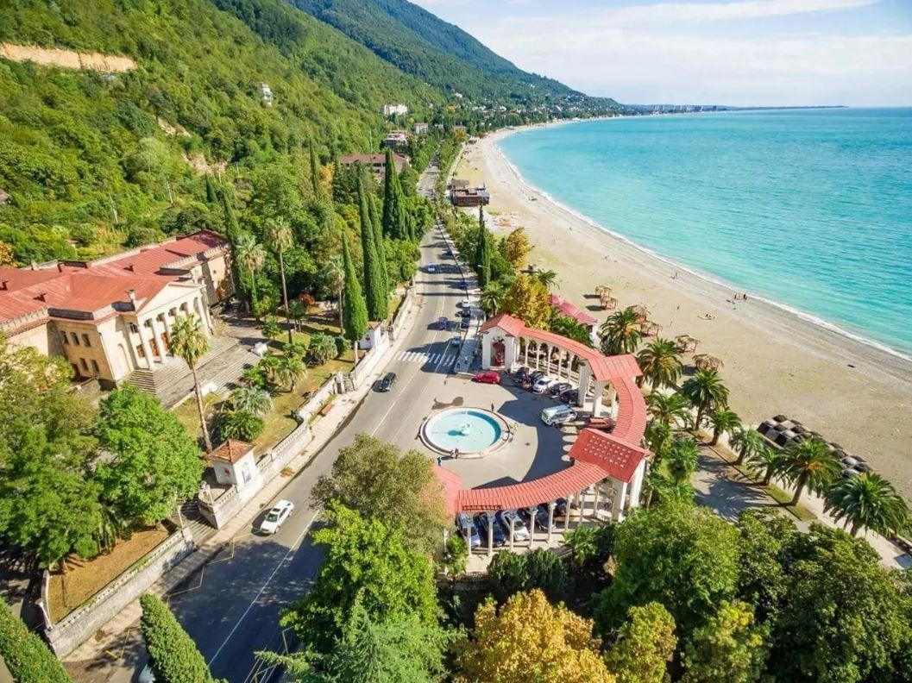

Гагра

| Население | 12,500 |
| Плотность | 100 чел/км² |
| Площадь | 125 км² |
| Средняя температура | 15°C |
| Основан | 1870 год |
Гагра — живописный курортный город на Черноморском побережье Абхазии, известен своими пляжами, лечебным климатом и историческими памятниками.